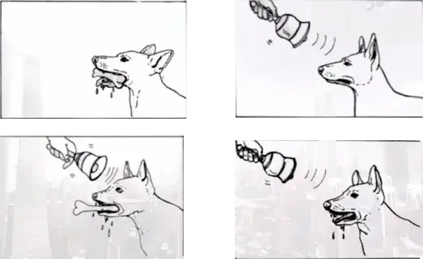
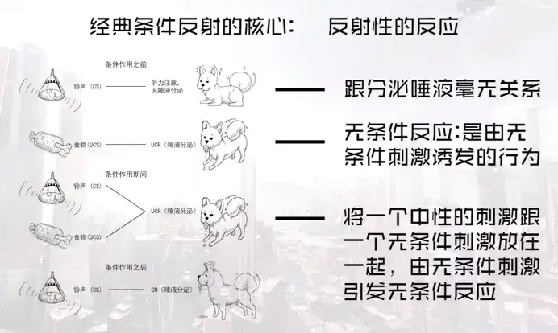
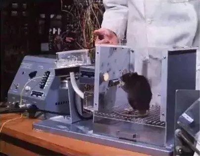
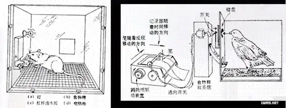
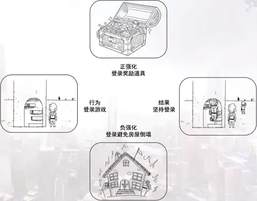
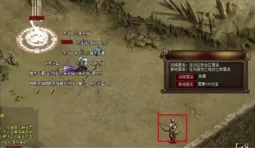
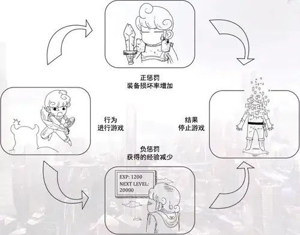

第二章 游戏即学习
2-1 游戏行为概述
同学们大家好，欢迎大家回到游戏心理学的慕课。
从这节课开始，咱们一起来看一看游戏行为所蕴含的科学原理。
在这里我们所说的游戏行为呢，是指玩游戏的人，也就是玩家，在游戏中发生的交互的动作。
咱们用一个例子来说，《超级马里奥》是游戏史上的经典之作，像我这么大的或者比我更年长的人都在八位机上玩过这个游戏，现在大家也能够通过模拟器或者其他途径能玩到。
在从来没有玩过游戏之前，我们不能说自己会玩这个游戏，甚至在刚刚进入游戏的时候，我们也都还不知道如何去玩这个游戏。
我们是如何学会玩这个游戏的呢？我至今都还记得第一次踩到敌人，第一次顶碎砖块的时候那种发现新大陆一样的快乐，当然了，多年以后我才知道其实不是头顶碎的，而是用拳头打碎的，当然同时也记得为了要通过某一个很难的关卡所付出的数次、甚至几十上百次努力的那种艰辛。
当我们掌握了规律和技巧之后，这些最开始的难题就不再是难题，因为我们 “习得”了这种情境下解决问题的方法。伴随着技巧的提高，游戏难度也会提升，会有一个难度曲线。这条曲线让玩家一直保持着需要努力学习和熟练才能过关的状态。
这是一种典型的**“试误学习”**的行为，相比咱们传统教育观点强调的“努力学习”、“用心记忆”，这种学习方法把“学习”这种行为变得更加系统和隐蔽， 游戏化的学习藉由我们自己发现问题进而解决问题，在此过程中的种种努力尝试和认真思考，都可以为我们带来更深刻的领悟和记忆。
这种学习方法在人工智能的训练上也有例子。卡内基梅隆大学的博士汤姆·墨菲（Tom Murphy）曾经编写过一个可以玩《超级马里奥》的人工智能程序，它的算法是机器学习的一种。大家可以自己在视频网站搜索“人工智能玩任天堂经典游戏”来看到这个视频的完整版。在这个视频里我们能看到，人工智能最初是跟我们一样，掉坑或者被敌人碰到然后游戏结束，那么在多次不同的失败之后，人工智能就能够学会要踩敌人或者躲过去，不仅会吃花发子弹，后期还能在掉坑的时候通过踩敌人跳回来，甚至还发现了可以“用头干掉敌人”这种游戏本身算法的 bug，看人工智能的迭代就好像在看我们自己玩游戏的经验一样。
上一个章节我们提到过说笛卡尔说的“我思故我在”，如果笛卡尔在今天看到人工智能，不知道会不会颠覆他的理论基础。不过幸好，在进行《超级马里奥》游戏的时候，我们和机器都没空思考“我是谁？从哪儿来到哪儿去”之类的终极问题，我们思考的只是如何获得更长的游戏时间，获得更高分数和评价，获得更大的满足感。
从某种角度来说，我们在游戏中其实是被游戏牵着鼻子走的，这其实跟行为主义实验室里的小白鼠、鸽子、猫等等动物挺像的。
咱们这一章接下来的课程中，基本不讨论作为人类的主观意识，就只拿我们体现出来的行为说事儿，来看看我们在游戏中的行为。
2-2 经典条件反射
同学们大家好，欢迎大家回到游戏心理学的慕课。
这节课咱们从一个大多数同学都听说过的词汇开始，这个词就是：条件反射。
说到条件反射，就不能不提到 19 世纪俄国的生理学家伊万·巴甫洛夫，还有他的狗。巴甫洛夫完成了第一个严格的经典条件反射研究，创立了经典条件反射学说，而这一切其实是源于一次非常著名的意外事件的。
当年巴甫洛夫原本是研究消化系统的。研究消化系统其实重要的一部分是研究消化过程，当时流行的研究方法是把动物麻醉，然后动刀，被称为急性实验， 动物实验之后就死亡了，而巴甫洛夫发明了新的实验方法，也就是用健康的动物做慢性实验，来长期观察动物的正常生理过程。

在他的实验中，巴甫洛夫在狗的唾液腺位置连接一根导管引出唾液，记录唾液的分泌量来研究唾液分泌。为了让狗分泌唾液，助手会给狗提供食物，刺激狗分泌唾液。在实验进行一段时间之后，巴甫洛夫发现，最开始狗是在吃进食物之后分泌唾液，随着实验的推进，它会在闻到食物或见到食物之后开始分泌唾液， 到后来它甚至会在听到助手开门的声音，甚至助手的脚步声时，就开始分泌唾液了。
有些人可能会注意不到这个问题，也有些科学家认为研究这个问题是偏离原本研究方向的，特别愚蠢，但是巴甫洛夫认为这种"灵魂分泌液"比起唾液的化学成分更有意思，所以就改变了研究焦点，结果永久性地改变了心理学的进程。
那么他后来的实验是怎么做的呢？
在实验的开始阶段，他首先呈现给狗各种与分泌唾液无关的刺激，比如铃声。 我们可以想到，如果只有铃声响起，狗对声音仅仅会产生定向反应，即竖起耳朵， 转动脑袋，对声音进行定位。
**如果在铃声响起之后再提供食物，狗则会对食物产生非条件反应，分泌唾液。 当这种匹配反复进行多次之后，寻找音源的定位反应停止了，唾液分泌反应却出现了，即使不提供食物，只呈现铃声，狗也会如期分泌唾液。**巴甫洛夫随后又用其他相对于唾液来说是中性刺激的各种刺激，如灯光和节拍器重演了这种效应的普遍性。

首先来看第一行，当铃声响起的时候，小狗的反应可能是竖起耳朵听，跟分泌唾液是毫无关系的。
第二行，左边的肉骨头，我们叫它无条件刺激，是任何能够自然诱发反射性行为的刺激，如刺激唾液分泌的食物，刺激瞳孔收缩的光亮，刺激呕吐的药物等等。
第三行，是将一个中性的刺激——比如铃声，跟一个无条件刺激放在一起， 由无条件刺激引发无条件反应——流口水。
最后一行，左边的铃声变成了条件刺激它原本在“无条件刺激-无条件反应” 这个反射中是没有任何意义的，但经过反复与无条件刺激匹配后，变成了能够引发原本的无条件反应的刺激。
那么右边的流口水，也不再是由于食物这种无条件刺激锁引发无条件反应了， 它变成了条件反应，经过反复匹配后，变成了条件刺激引发的条件反应。
这次我们拿恐怖游戏来举例，来回想一下我们自己玩恐怖游戏的体验：在恐怖游戏当中比较常见的预警方法是通过声音，有的是随身携带收音机发出电流噪声，有的是原本清晰的背景音乐逐渐淡出，有的是开始特殊的背景音乐，无论哪一种，我们会通过声音的变化意识到危险，并做出随时迎战的准备。与此同时， 你会发现自己的心跳加快了，并且可能全身出汗，呼吸急促，更极端的状况是你看到别人的游戏实况，或者走在路上听到商店或者其他音源播放了这种声音，都会产生类似的身体反应。
这正是因为我们的身体已经在游戏当中建立了这种生理反应，最开始是为了应对敌人袭击而产生的无条件反应，在反复与声音匹配之后形成了声音的条件刺激引发条件反应。
说到这里有同学可能要说了，难道我们跟巴甫洛夫的狗一样吗？
不能这么说，不仅是巴甫洛夫的狗，后面的课上还有很多动物实验，我们跟他们都差不多。
这节课就先到这儿了，下节课再见。
2-3 试误学习
同学们大家好，欢迎大家回到游戏心理学的慕课。
上节课咱们说了巴甫洛夫和他的狗，这节课咱们来说桑代克和他的猫。
几乎在巴甫洛夫运用经典条件反射实验他的狗的同时，爱德华·桑代克正在观察他的猫如何尝试从迷笼中逃脱。
其它没用的行为消失了，能够成功打开笼子的特定行为因为愉快的结果而得到了保留
我们可以把迷笼脑补成一个为猫设计的密室逃脱游戏。桑代克认为在这个密室逃脱的游戏里，猫其实是在进行学习的。因为最开始，猫只是胡乱抓、咬、拍打笼子的各个部分。几分钟后，它偶然获得了成功的反应——拉动了绳子或碰到了按钮，并冲出笼子获得了放在门口的食物奖励。当猫重新被放回笼子后，它逃离所耗费的时间少了一些，几次尝试之后，它学会了直接进行正确的行动，而不再胡乱尝试。“所有其它没用的行为消失了，能够成功打开笼子的特定行为因为愉快的结果而得到了保留。”所以我们能够看到，小猫学会了开笼子。
所以桑代克认为，学习是刺激引发反应的一种联结。所以对于小猫来说，刺激情境就是这个密室逃脱，目的是逃脱并获取食物，那么联结这两者之间的适当反应就是拉绳子或按按钮这种能够打开笼子的行为。
那么桑代克的这个刺激反应联结的学习，反映在动物实验当中，就是盲目尝试错误体验，以一种比较机械的方式逐渐自动产生的。他把这种行为与结果之间的关系成为效果律：能够导致满意结果的反应，以后出现的概率会越来越大；导致不满意结果的反应，以后出现的概率会越来越小。同时他还提出了练习律：已形成的可变联结，用得多了就会变强，长时间不用就会变弱。
除了迷笼，桑代克还创造了迷路圈、迷箱等实验工具，试验鱼、鸡、猫、狗等多种动物的学习。根据这些实验，桑代克认为动物的学习并不具有推理演绎的思维，它们的学习方式是试误式的，即动物是通过反复尝试错误而获得经验。这么看来呢，我们玩密室逃脱还是比动物要高级一些的，至少还有一些需要推理的谜题。
话再说回来，这种失误学习的方法在红白机时代的游戏中其实是被用得淋漓尽致了。就像上节课所提到的《超级马里奥》，它并没有提供“How to Play”啊， 新手引导啊什么的，游戏开始之后我们面对的就是蓝天、白云、马里奥和游戏不断倒计时的压力。然后我们就像迷笼中的猫一样，尝试按动手柄上的按钮，上下左右，A和B。同时我们能观察到马里奥在按键下左右移动并跳跃，因此学会了如何移动。当我们往左移动到了画面左端发现无法继续前进的时候，其实就是得到了一个不满意的结果；然后我们会折返向右移动，然后在发现画面向右卷动的时候，获得了这个满意的结果，理解了这个游戏是横版并需要玩家向右移动的。 接下来呢？出现了会移动的蘑菇敌人。如果径直走过去碰到敌人，那么马里奥就会丢掉一条命，又是不满意的结果，只能重新开始游戏。
再次回到游戏中，遇到敌人，怎么办？可能会跳起来躲闪以避免因为之前的错误而失去游戏的机会。在失误中，玩家学会了游戏的方法。在随后的游戏中， 我们会偶然踩到敌人发现这是消灭它们的方法，会偶然撞到出现增大蘑菇的砖墙， 会偶然撞到可以不断跳出金币的砖墙，会偶然发现变大之后可以撞碎砖墙，会偶然发现踩到乌龟壳会导致乌龟壳的移动反弹……诸多意料之外的试误结果让我们学会了怎么玩这个游戏，在不断游戏中去总结规律预测结果，然后选择我们所要采取的行为。
这种看似会令玩家挫败和沮丧的学习方式，恰恰让我们从中得到了自主学习的快乐感——发现并采取正确的行为可以延续游戏时间提升游戏分数。
现在游戏的类型越来越丰富，操作越来越复杂，新手教学环节作为玩家接触游戏的最初印象，也显得越来越重要了。对于不同类型的游戏来说，新手引导的做法也是不同的，操作类的游戏多数还是秉承试误学习的经典做法，而模拟和策略类游戏因为策略重于操作，而很多都采取了强制引导的方法。我们可能都玩过那种用箭头指引玩家点这里点那里这种完全剥夺了玩家自主探索空间的游戏，一方面来说是为了给玩家非常明确的引导，可以避免玩家失误造成的挫败感和损失， 但是另一方面来说这也是偷懒的做法，尤其是一股脑儿把所有的操作都一次性交代出来的引导，最后的效果可能只是玩家跟着高亮区点点点，没办法把引导的内容真正运用好，到了正式玩的时候还是一头雾水，这就反而会让玩家感到游戏缺乏引导和帮助，影响游戏体验了。
建议各位同学在课后再回顾一下你们玩过的好游戏，分析一下它们在新手引导阶段所做的设计，这会对我们自己的游戏设计和开发提供不少帮助。
好，这节课就先到这里，下节课再见。
2-4 行为塑造
同学们大家好，欢迎大家回到游戏心理学的慕课。
聊过了狗和猫，今天咱们来看看斯金纳的老鼠和鸽子。
斯金纳也是研究行为的心理学大师，他受到桑代克的启发，又扩展了巴甫洛夫和桑代克的研究。他的研究叫做操作性条件作用，说的是操纵老鼠或者鸽子的行为所引发的结果，然后来看这些结果对实验对象的行为有怎样的影响。
跟经典条件作用区别在哪里？就是操作性行为是老鼠也好鸽子也好人类也好，是咱们自发的，是能根据可以观察到的结果来描述特点的，而不是由特定刺激所引发的。

斯金纳箱
我们说行为心理学家都是能工巧匠啊，为了实施这个新的实验分析，斯金纳也发明了一种能让他操纵行为结果的装置，叫做斯金纳箱。
在这个箱里，研究者需要定义一种行为，比如说按压一个杠杆。当实验对象做了这个行为之后，箱子的机械装置就会放一点儿食物给实验对象。
在这里有同学可能要问了，一只老鼠怎么就知道去按杠杆来获得食物呢？
没错，一只从没有参加过实验的老鼠是不会自发压杆的。因为在自然界当中， 老鼠为了生存可能需要用爪子完成各种技巧去吃东西，去打洞之类，但是去压一个杠杆绝对不是必备技巧。
那么在让老鼠学会压杆这种新的、复杂的行为之前，我们需要使用连续接近塑造法，简单来说就是去强化那些跟最终的目标行为接近的自发行为，然后逐渐把这个压杆的行为塑造出来。
在实际的实验中呢，首先要饿老鼠一天，这个过程被称为食物剥夺，目的就是为了让食物成为对老鼠来说非常有力的强化物。
然后呢，有计划地让食物出现在食物漏斗中，让老鼠知道去哪儿能找到食物。
再然后就要附加条件了，比如说在老鼠往杠杆那儿移动之后，再让食物出现。
这个行为建立之后再提升难度，比如在老鼠小爪子碰到杠杆之后再提供食物。
就这样逐步引导，最后实现需要老鼠按压杠杆才提供食物。

在这个过程当中我们可以看到的就是：随着要求的提高，老鼠学会了通过按压杠杆获取食物。而在这个行为塑造的过程中，其实是需要预先设明确为了完成最终目标，到底有哪些行为成分，并且要运用有针对性强化来推进这个过程中的每一步。
那么在游戏中，你有没有注意到有很多类似的塑造玩家的行为？
有些可能是比较直接的，通过在游戏中给礼包的行为来鼓励玩家的某些行为，新人礼包啊，5 级礼包啊，10 级礼包啊，登录礼包啊，打排行榜的礼包啊等等。
在《英雄联盟》的开发团队里有一个由心理学家、统计学家、教育领域的学者组成的“玩家行为团队”。这些人的工作就是想办法让《英雄联盟》的玩家的行为更具“体育精神”，这其实就是在塑造玩家的行为了。
这是一个相当复杂的问题，但是他们用了一个看起来相当简单的办法：推出荣誉系统，以引导玩家做出良好的行为。
每一场比赛之后，玩家们可以给队友或对手荣誉评价，如“乐于助人”、“亲切友好”或“可敬的对手”等。评价行为积累的点数会体现在玩家资料中。玩家可以送出的荣誉数量是有限的，所以得到一个表扬是很难得的。
从心理学的角度来说，这个系统是实际上就是反馈的循环，以及学习心理的应用。
在这个系统当中，反馈的速度和明确性是塑造行为的催化剂。
当玩家做出了游戏设计者希望的行为的时候，给他想要的东西，比如荣誉点， 就非常有效，特别是在玩家做出这个行为之后马上就给予的明确而又有意义的奖励，那么这个行为塑造的效果也就会更好。及时、明确，这两点在创造行为和奖励之间的联系的时候，是非常重要的。
无独有偶，更加具有艺术性表达的，更偏向独立游戏的制作人也在思考这个问题。陈星汉在谈《旅途》的创作时就说，他在游戏中想要营造的就是玩家之间互助而非竞争的环境，让玩家实现情感的交流。
那么应该怎样做？首先像《魔兽世界》一样，通过让玩家在单独面对强大的怪物时显得弱小，从而迫使他们组队进行作战，但其实在玩家之间却仍然没有任何的情感联系，只是一起打怪而已。
要求玩家之间合作遇到的另一个困难就是，玩家们总是会有让对方去“经受苦难”的趋向。在《旅途》的开发中，游戏包含有一种让一名玩家可以移动另外一名玩家的能力，这个设计的本意是让玩家们可以在攀上岩石的时候相互帮助。 但在实际中，玩家们却更经常利用这个能力把同伴扔下山。这让我想起小时候玩的《松鼠大战》，乐趣之一就是举起队友扔敌人。
玩松鼠大战的时候我们还要考虑身边这个同伴会不会在现实里跟我打起来， 但是在网络游戏里，这种担忧就进一步被削弱了。玩家不会把现实生活中的道德观带到游戏中，而是只会单纯地寻求反馈。帮助同伴爬上某块石头，不会马上带来任何的回馈，但把他推倒敌人的包围圈里却会有很多的连锁反应——流血、尖叫、甚至是死亡等等。就算没有任何经验值或金钱的奖励，这些视觉上的效果也足够成为游戏中的奖励，成为玩家追求的目标。由此，陈星汉认为，想要控制住玩家，首先要做到的就是控制住他们的输入和输出。
换句话说，好的行为塑造是隐蔽的也是直白的，隐蔽在于设计师不需要文字来告诉玩家应该做什么，直白则在于我们是否赞同玩家进行某些行为，其根本上就体现在是否为他们的行为提供反馈。
如果你并不能推动其他玩家，那么就不存在把对方推下山崖获得杀戮快感的这种奖励。没有强化的出现，玩家就会逐渐减少甚至放弃尝试你不希望的行为。 同时在游戏中提供的强化，无论是视觉上的或是经验值或是道具，都用于强化你所倡导的行为，这是塑造玩家行为的途径之一。
好，这节课就先到这里，下节课再见。
2-5 强化
同学们大家好，欢迎大家回到游戏心理学的慕课。
上节课咱们介绍了斯金纳关于操作性条件作用的研究。
在研究中，斯金纳发现无论实验对象是老鼠还是鸽子，在实验中总会导致 3 种后果：
1、中性后果：对后续行为没有影响的；
2、强化，加强某种行为或使它更可能发生；
3、惩罚，减弱某种行为或使它不太可能发生。
咱们不讨论中性后果，而着重看后面两种。
在实验中，为了增加某一行为出现的概率呢，研究者会使用强化物，即与行为相伴的刺激。而强化物所造成的强化又分为两种情况：
首先是正强化，也就是给实验对象一个良性的或者说好的刺激。这在现实生活中很常见，比如父母对孩子，老板对员工所采取的手段中就能够看到很多例子。 比如说考试 100 分可以得到一个礼物，或者是加班而得到奖金，这些被鼓励的行为发生之后越早给出强化物，效果越大。
而奖励的方式则可能是一级强化物（满足生理需要的食物等）或是刺激强化物（金钱、表扬、赞赏等）。
在游戏里，我们习以为常的一些奖励其实都是正强化。比如完成任务的时候， 得到游戏币或装备的奖励，就是最直接的正强化，这些强化物使我们在付出辛苦之后得到了相应的满足，激励我们继续游戏。玩《黑暗破坏神》的时候，听到那种熟悉的“叮”的一声，你能无视那种幸福的感觉吗？那是怪物掉落戒指时发出的声音，是混合了珍贵的奖励和艰辛战斗的幸福的声音。
除此之外呢，正强化被游戏设计所接纳的一个最明显的例子就是成就系统的广泛使用。成就系统是一种非常有趣的研究案例，因为除了成就本身之外，游戏实际上并没有提供什么实质的奖励。比如《魔兽世界》等游戏，就是通过使用成就系统而引导玩家尝试其他游戏模式，比如探索，PvP模式之类。帮助玩家在他们所接触的游戏中找到更多乐趣，实际上是一种正强化运用的表现，有了得到奖杯这种正强化，玩家就会由于刺激的驱动，而去尝试游戏设计师希望玩家去尝试的行为。
更加常见的就是每日登录，然后获得礼盒的系统，连续 7 天还有大礼包。
负强化与正强化正相反，是指去掉一个负面的或者说不好的刺激。这种负面的刺激呢，也是为了引发出现所希望行为而设计的。在斯金纳箱的实验中，老鼠除了按压杠杆获得食物之外，还会为了避免遭受电击而按压杠杆。在现实生活中， 我们仍然来看家长对孩子，老板对员工的策略：对付小孩吃手的习惯，家长可以在吃手行为出现的时候进行指责，但是请大家注意，比这个指责更关键的是，一旦孩子不吃手了，就立即停止批评。久而久之，孩子吃手行为的频率就会渐渐降低直至消失。在公司里可能迟到的员工就没有电梯只能爬 12 楼上班，那么为了避免这个爬楼的辛苦，大家就会尽量不迟到。
回到游戏里来看，在某些游戏中，我们需要定期登录，以避免自己的房屋或装备损坏，避免宠物或伙伴的友好值降低。比如《Ultima Online》，玩家需要定期访问自己的城堡或房屋，以努力维持建筑物的现状，否则这些建筑物便会开始逐渐破落。从游戏开发者的角度来看，这是种成本较低的策略，因为开发者完全不用给给玩家提供什么奖励。这与前面说的，另一些游戏提供连续登录奖励的正强化可谓异曲同工——激励玩家登录游戏。

那么仅针对激励玩家登录游戏这一点来说，正强化和负强化哪一种更有效？ 请大家课后来思考一下。好，这节课就先到这里，下节课再见。
2-6 惩罚
同学们大家好，欢迎大家回到游戏心理学的慕课。
上节课咱们介绍了正强化和负强化，这节课咱们来看正惩罚和负惩罚。
从个人经验的方面来看，我们可能都很熟悉惩罚。在强化的时候有强化物， 那么**惩罚的时候也有惩罚物，它是指任何一种能降低行为出现概率的刺激。**它同样分为两种：
正惩罚，是指施加一个负面的不好的刺激。就是当不当行为出现的时候给予处罚，往往是给对方一种让他感到不快的刺激，我们的法律体系其实就是正惩罚的最好的例子，简单粗暴，但是有效。那么在惩罚的时候必须注意，惩罚的是什么，意义要明确，时间要适当，强度要合适。

红名除了本身玩家间识别的意义之外，会给玩家增加游戏难度和失败成本。
玩《水果忍者》的时候，如果我们操作失误切了炸弹，那么就会结束游戏。 这种正惩罚所带来的郁闷的感觉是非常令人不快的。即使不是结束游戏这样残忍的惩罚，我们在游戏中也会面临其他形式的正惩罚。比如在很多 MMORPG 游戏中， 对于杀人如麻的玩家会施加一个正惩罚——红名。它除了本身玩家间识别的意义之外，会给玩家增加游戏难度和失败成本：中立的NPC卫兵会因为这个红名而攻击你，如果在红名状态死亡，则需要付出的代价比非红名要高得多。由此可以看出游戏设计者所希望的玩家行为是怎样的，这也是涉及到玩家行为塑造的技巧之一。
**再来看负惩罚。负惩罚就是指去掉一个良性的或者说好的刺激。这种惩罚比正惩罚更为常用，因为它更温和。**所谓去掉一个良性的刺激，就是指当不适当的行为出现时，不再给予其原有的奖励。比如一个孩子贪玩，经常不完成作业。怎么来改正呢？可以告诉他：只有在完成作业后才允许他看最爱看的动画或者玩最喜欢的游戏，否则就不许看不许玩。那么在没有办法反抗的情况下，他就会为得到自己想要的奖励，而自觉地完成作业。这就像在游戏中，如果你选择不帮助 NPC 寻找他失落的道具，就不能再得到他曾经无私提供的帮助，更不用提经验、 金钱、道具和装备的奖励了。
相较于正惩罚，负惩罚看起来更加温和，它给予玩家的挫败感更加间接，但实际上，丧失曾经拥有的东西，这对于我们每个人来说或许更加难以接受。这里值得一提的就是“防沉迷系统”。当你是一个未满 18 岁的玩家，在连续进行 2 小时游戏之后，游戏中完成同样任务的奖励会随你游戏时间的增加而逐步减少直到消失。作为玩家的你会有怎样的选择？“防沉迷系统”就是利用负惩罚原理来减少玩家长时间进行游戏的行为。但这显然与游戏公司盈利的目的大相径庭。所以在游戏公司的默许下，聪明如你，除了离开游戏之外，恐怕会选择登录另一个账户继续游戏，或者干脆注册账户的时候就伪装成 18 岁以上的成年人吧。
到这里，大家是否感觉有点儿乱？正负强化惩罚之间的区别，历来都是扰乱大家聪明的大脑的利器。但其实要把他们区分开并不难，我们需要明确的是“正”、 “负”其实与“好”、“坏”无关，它表示的是程序上的施加或撤销。
“正”表示施加，“负”表示撤销。
在强化过程中，无论是正强化还是负强化，都会促进行为的再次发生。
在惩罚过程中，无论是正惩罚还是负惩罚，都会削弱行为的重复发生。
现在，大家能够区分“负强化”和“正惩罚”了么？虽然都包含负面的刺激， 但负强化是将这种一直存在的刺激撤销，而正惩罚是在没有刺激时施加一个刺激。

在游戏中，“负强化”和“正惩罚”经常同时存在。以鼓励玩家登录游戏来举例，可以正强化：登录奖励；可以负强化：登录避免物品损耗。以限制玩家游戏时间来举例，可以正惩罚：装备损耗加大；可以负惩罚：获得经验减少。
好，这节课就先到这里，下节课再见。
2-7-1 强化计划 1
同学们大家好，欢迎大家回到游戏心理学的慕课。
这节课咱们再回来看强化。
2001 年，**美国心理学专业研究生约翰·霍普森（John Hopson）的一篇文章 《Behavioral Game Design》引起了游戏行业的重视，到了今天，我们已经难以找到不重视内部奖励结构的游戏。**十几年前，有些人认为游戏是否包含奖励机制， 以及这些奖励的分配方式将影响玩家游戏体验的说法很荒谬。但现在看来，奖励已经成为游戏中一种理所当然的内容。与此同时，针对游戏究竟是不是斯金纳箱的讨论也出现了。在开始讨论这个话题之前，我们先来看一看以下四种强化计划以及它们在游戏中的体现。
当研究者不想或不能对实验动物每次做出特殊行为都进行强化的时候，会发生什么？在斯金纳的一次实验中出现了这种情况，当时他没有足够的食物奖励给那些埋头苦干的老鼠，为了节省食物，他仅仅在经过某一时间间隔之后才给老鼠食物——无论这期间老鼠按压了多少次杠杆都不会得到更多奖励，即使如此，老鼠在这种部分强化计划中的反应却丝毫不逊色于连续强化。
并且有意思的是，当按压杠杆之后不再给与食物的时候，也就是被称为消退训练开始的时候，经过部分强化训练的老鼠会比连续强化训练的老鼠坚持更长时间才会产生消退，在那之前，它们仿佛比以前更加不知疲倦地按压杠杆。
部分强化效果的发现，让研究者们更广泛地研究不同的强化计划对行为的影响。在研究中，强化物按照比率计划——就是以次数为参照，或间隔计划——以时间为参照来施放。在每种情况下，既可以有不变的固定强化模式，也可以有不规则可变的强化模式。
这节课咱们先来看固定比率计划（FR）。
在固定比率计划（fixed-ratio schedule）中，强化物在实验对象做出一定数目的行为后才出现。每次行为后都伴有强化时，我们称这种计划为 FR-1计划， 也就是最初的连续强化计划。而每经过 25 次行为后才给与强化的计划就是FR-25 计划。由于行为与强化直接相关，固定比率计划产生的行为速率很高，因为只要行为够频繁，那么老鼠可以通过按压杠杆得到与它劳动完全相符的食物。固定比率计划在每次强化之后都会产生一个停顿。在没有事先训练动物做出大量行为时， 通过增加每次强化所要求的行为次数，而过度延缓行为速率，会导致行为消退。
在游戏中，固定比率计划就是玩家完成特定数量的动作后提供奖励。比如，《超级马里奥》中玩家吃到 100 个金币可以获得额外的生命。每次奖励所需收集的金币数量是相同的。
固定比率计划是游戏中最为常见的强化手段之一，往往可以创造出独特的游戏效果。最早是漫长的停顿，一旦了解奖励的规则，玩家就会尽快做出行为直到获得奖励。当玩家认为自己的行为无法带来奖励并因此没有动力做出首次行为尝试时，就可能出现停顿。而一旦玩家决定继续向前，他们就会尽快做出行为来快速地获得奖励。
**固定比率计划下的明显停顿可能成为游戏设计师的一大问题。那段时间内， 玩家几乎失去了玩游戏的动力，这很可能导致玩家离开游戏。**因为停顿时间的长短受到比率的影响，很明显，FR25 就比 FR10 需要的停顿时间长。这意味着如果比率随时间增加，几乎所有的 RPG 游戏中角色每次升级所需的经验值都会随等级的提升而逐渐增加，那么很显然停顿的时间也会随之增加。当停顿变得无穷无尽的时候，如果玩家认为等待如此长的时间是没有必要的，那么就很可能会选择离开游戏。
**如此设计的好处在于，在停顿期间，玩家可能会选择先暂放奖励性行为。比如，玩家知道升级需要很长的时间，那么他们可能就会利用这段时间来测试新战术或尝试游戏其他方面的内容。**在《魔兽世界》中，流行着一句话：“满级才是游戏的开始。”在游戏中，升级奖励已经不再是玩家追求的唯一目标，在满级之后玩家可以挑战的游戏内容和随之收获的奖励完全可以弥补无法升级带来的停顿感。而游戏不断的更新和开放级数，则是对核心玩家在固定比率计划之下保持游戏动力的基础保障。
好，这节课就先到这里，下节课再见。
2-7-2 强化计划 2
同学们大家好，欢迎大家回到游戏心理学的慕课。
这节课咱们再回来看第二种强化计划——可变比率强化，简称 VR，但不是虚拟现实那个 VR。
在可变比率计划（variable-ratio schedule）中，控制强化物出现的规则仍然是比率。上节课咱们说了，固定比率是什么？就是两次获得强化物之间需要完成的行为的次数是确定的，不管多还是少，重点是我们能够明确知道到底还要做多少次行为就能获得奖励，但是在可变比率里呢，能确定的是强化物之间的行为次数的平均值。**比如我们说一个 VR-10 计划，就是指平均每 10 次行为会出现一次强化，但到了真正的游戏或者实验当中，强化可能出现在第 1 次行为之后， 也可能出现在 20 次行为之后，作为游戏设计师或者实验的研究者可以把这个平均值完全交给机器来做随机数，那么结果就是他们也不能确定到底什么时候才会出现这个强化。**当然了，如果想控制还是能控制的，我们所谓留个后门儿，这在程序设计上完全不是问题。
正因为不知道在第几次完成动作的时候能够得到奖励，所以可变比率计划产生的行为速率是在咱们将要讲的四种强化计划里最高的，抗消退能力也是最强的， 尤其当 VR 的数值较大的时候。实际上，研究行为的科学家从一个较低的VR 值 （VR=5）开始训练鸽子啄食行为，然后逐渐提高 VR 值到110。那么它每小时啄食的次数能达到 12000 次，即使取消强化，它的行为仍会持续几个小时。
具有赌博性质的老虎机就是遵循可变比率计划的。向老虎机投放硬币的这个行为，在赌博者并不知道的比率控制下，需要投入未知数量硬币后才会出现令人满意的回报。就是这个原理，让赌博者的行为始终维持在较高而稳定的水平。可变比率计划就是让你猜测奖励何时出现，而你总是打赌它在下一次就会出现。
在游戏中，玩家也需要特定数量的行为才能获得奖励，但是做出行为数量会改变。玩家可能需要杀戮将近 20 个小精灵来获得火球魔法书页，但是每次这个数量都是随机的。在抽卡的游戏里，可能要几十次十连抽才能出一张SSR，也可能是“单抽出奇迹”，单抽三次就得到 SSR。这跟是你是欧洲人还是非洲人没关系，单抽出奇迹了也不能代表你就脱非入欧，下次可能几十次十连抽还抽不到 SSR 的仍然是你。重点在于，即便我们知道了 SSR 的比率了，还是要为了可能性而不断去尝试。
所以我们可以看到，在可变比率计划下，玩家通常会以相当高的频率和稳定的流程来做出行为。尽管这个频率没有像固定比率计划那么高，但是也不像固定比例计划那样存在可能导致问题的停顿。因为虽然可能性很小，但理论上玩家总有可能在第一次行动之后就获得奖励，这种与老虎机无异的赌博感令玩家总是有战斗的理由。
通常来说，可变比率计划能够产生最高的整体活动率。这并不代表它是最棒的方法，抛开氪金圈钱之类涉及伦理层面的问题，如果我们在游戏里希望玩家做出高且稳定的输出，那么可变比率计划是值得一试的。
好，这节课就先到这里，下节课再见。
2-7-3 强化计划 3
同学们大家好，欢迎大家回到游戏心理学的慕课。
这节课咱们再回来看另外两种强化计划——固定间隔计划和可变间隔计划。
在**固定间隔计划（fixed-interval schedule）里，强化物是在经过一个固定的时间间隔之后，实验对象第一次做出某个行为时出现。**在 FI-10 计划中，实验对象得到强化后，必须等待 10 秒再进行的行为才会被强化，换句话说，强化与行为次数无关。在固定间隔计划中，行为速率表现为扇形模式，每次强化结束， 动物几乎不再做出反应。随着奖励时间的临近，动物行为越来越多。
在现实生活中，我们经常说“deadline是第一生产力”，所以我们经常出现的就是，老师规定了说每月 1 号交读书笔记，那么我们肯定会在月底才开始突击作业，不仅仅是因为拖延症，同时也是因为强化物。这里的强化物是什么？是收作业给分数，强化物也是每个月才出现一次的。
而在游戏中，固定间隔计划的例子可以是在线奖励，类似每隔 30 分钟时间出现一个福袋，而捡起福袋就可以打开以获得比如道具、游戏服务等等在线奖励。
应对固定间隔计划，玩家通常的反应方式是获得奖励后暂停一段时间，然后逐渐加快反应速度直到获得奖励。在福袋的例子中，领完一次福袋，玩家就会将注意力集中在游戏的其他部分，随后再回到预定地点看看是否出现了新的福袋。 如果还没有出现，那么玩家又会将注意力转移到别处。随着奖励的时间逐渐靠近， 这种查看将变得越来越频繁。靠近奖励时间时，玩家会静静等待奖励的出现。
和固定比率计划相同的是，固定间隔计划也存在停顿问题。与固定比率计划不同的是，固定间隔计划的活动率并没有始终保持较高水平，而是随时间的临近逐渐增加，但仍然存在停顿这个令玩家失去动力的阶段。
然后再来看可变间隔计划（VI）。
在**可变间隔计划（variable-interval schedule）中，平均时间间隔是预先确定了的。在 VI-20 计划中，平均每经过 20 秒呈现一次强化物。这种计划产生中等但却稳定的行为速率。**可变间隔计划中的消退是渐进的，并且比固定间隔计划要慢很多。在一个实验中，强化终止后，鸽子在最初 4 个小时里啄食了 18000 次，反应完全消退经历了 168 小时。
在生活中，我们还记得义务教育阶段的每一次突击测验所带来的紧张感。在喜欢突击测验的老师上课之前，你会不会临时抱佛脚？
在游戏中，可变间隔计划同样存在：每次奖励后所间隔的时间是变化的。它类似于可变比率计划，也能够产生稳定和持续性的行为，虽然节奏会比较缓慢。如同可变比率计划，玩家总是拥有行为的理由。以之前提到的能力福袋为例，可能在收集之后马上再次出现，也可能在1个小时之后出现。动力随时间逐渐分散， 所以不存在玩家的注意力转移的时间。活动率比可变比率计划要低，因为奖励的出现与行为并无联系。即便玩家在间隔时间内寻找福袋上千次，它的出现也不会变得更快。也有些游戏会不定时发布江湖通缉令之类的高奖励任务，结合玩家之间的竞争来调动玩家参与游戏的积极性。而玩家呢，也很善于分辨出哪些结果源于自己的动作，哪些结果与动作无关，并据此调整和计划自己的行为。
在研究游戏中强化计划的运用的时候，我们可以将链计划（chain schedule） 融入强化计划之中，也就是说在整个强化的过程中存在多个阶段。
比如，**玩家可能需要杀死 10 个兽人才能够进入 boss的老巢，但是 boss 的出现可能是随机的。**这些计划通常出现在多阶段解谜和 RPG 任务中，玩家通常以某种非常特别的方法做出反应：他们将进入计划的下个阶段本身视为奖励。在这个例子中，多数玩家会将杀死 10 个杂兵之后进入 boss 老巢视为固定比率计划， 而将后续 boss 出现的可变间隔计划视为奖励。
好，这四种强化计划就先介绍到这里，大家消化一下，下节课再见。
2-8 消停和停顿
同学们大家好，欢迎大家回到游戏心理学的慕课。
前面的课里咱们提到了两个词：消退和停顿。这节课咱们来着重看一下这两个概念。
所谓消退，就是当我们停止强化的时候发生的反应。
比如说，两只鸽子关在笼子里，其中一只被锁在笼子上，另一只可以自由行动。然后呢，以固定间隔计划，比如 30 秒时间间隔给它们提供少量的食物。自由的鸽子能够吃到食物，但是那只被拴住的鸽子无法吃到，所以自由的鸽子每次都吃掉所有的食物。一个小时左右后，停止供应食物。在一段时间内，自由的鸽子会继续每隔 30 秒时间查看放食物的地方，经过一段时间之后，当它明白食物不会再出现时，大家猜它会怎样？
它会飞到笼子那头去攻击另一只鸽子。有趣的是，那只被拴住的鸽子从未吃过食物，自由的鸽子根本没理由去责怪它必须为食物停止供应而负责。尽管这种愤怒感是毫无理性的，但事实就是如此。
如果在游戏里，玩家的乐趣来源于在龙每次出现的时候把它给干掉，那么当屠杀特定数量之后，龙就不再出现。那么玩家会怎么做呢？在这里啊，在强化计划停止之后的行为取决于强化计划本身。在固定或可变比率计划中，玩家会继续保持较高的行动率，然后逐渐停止这些行动。在固定间隔计划中，他们的活动会逐渐达到顶峰，因为他们期望能够在间隔后获得奖励，之后会逐渐停止活动。需要注意的是，消退会引发沮丧和愤怒，这可不是鸽子才会有的反应，而是不分种群的普遍现象。
**作为人类，我们也会期待自己的行为能够持续有意义，当强化计划发生改变时，我们会感到很愤怒。这种情况我们称之为行为反差。**在黑猩猩实验里，最开始当黑猩猩做出拉杠杆之类简单的行为之后，它就可以获得生菜作为奖励。过段时间后，将每次拉杠杆的奖励变为它们更喜欢吃的葡萄。接下来，黑猩猩有次拉杠杆后又得到了生菜，它们会变得很愤怒，甚至会将生菜抛向研究者。之前它们为自己得到生菜感到欣喜，但是葡萄的出现给了它们新的期待，当这种期待没有得到满足时，挫败感和愤怒就会产生。
回想一下我们自己的游戏体验，有没有类似的情况？**减少奖励和削弱进展对玩家来说可能是种惩罚，并且可能导致他们离开游戏。所以说，这类的做法必须谨慎，而且要循序渐进，否则就有可能带来难以预料的影响。**甚至连暂时的削减也可能出现这种情况，比如当杀死某种低级敌人不再提供经验值，而且玩家还未发现可以转而屠杀更厉害的怪来获得经验值的时候，瞬间的奖励丧失令人感到极为厌恶。
但同时应该注意到，如果玩家处于不同等级时，消灭不同敌人所要付出的技巧与能力并不相同，那么玩家更易于接受经验值削减的变化。比如当玩家能力处于等级1的情况下，杀死兽人几乎是不可能完成的任务，那么在玩家完成这项艰巨任务之后获得大量经验与金钱，在玩家看来是理所应当的。而当玩家处于等级 80 的情况下，杀死兽人几乎是一瞬间的事情，那么此时不再向玩家提供奖励， 在玩家看来也不是完全难以接受的。重要的是，这种奖励的削减与玩家付出的努力需要成反比，并循序渐进。突然完全剥夺奖励远比每升 10 级，奖励减少 10% 要来得痛苦得多。
在谈到强化计划的时候，咱们还反复提到了停顿，这些停顿对于玩家参与游戏来说是有负面影响的。那么在游戏世界中，有一种表现较为特殊的停顿，不是与获得奖励直接相关的，而是为了控制玩家的能力平衡而产生的间歇期，也就是冷却时间，一般是主动技能或游戏功能激活后出现时间限制，防止玩家“过于频繁”地使用特定能力。间歇期在各种类型的游戏中都存在，已经成为平衡游戏和设计战斗互动的标准。
**如果要让玩家衡量使用特殊能力的时机，那么就需要添加某些风险元素，从而确保玩家不会总是使用这种能力。**比如在《虚幻竞技场》中，前往拾取能力提升道具会让你在一段时间内暴露在对手的枪口下。在《博德之门》中，如果法术失败后，只能过段时间才能再次使用。这些都是限制性因素，让玩家在行动的时候深思熟虑。对于这种停顿来说也是有负面影响的，那就是：间歇期完全不具有互动性，绝大多数情况下，玩家是不能通过自己的行为来影响间歇期的。而且大多数游戏的间歇期也没什么意思。因为间歇期并不是使用特殊能力的唯一限制性资源，而是次级甚至三级的资源。更多的限制资源还有魔法值的总量或者魔法的数量，尤其是角色扮演游戏。这两者的功能都是限制玩家使用特殊能力的次数， 但是一个问题也随之产生：作为玩家来说，肯定也是寻求最佳的性价比，如果使用单种限制因素就够了的话，为什么还要使用两种？换句话说，间歇期其实会减少玩家的战术深度。比如在《塞尔达》系列游戏中，假设你可以每隔20秒就扔一回炸弹，那么作为玩家你还会把精力用于探索和发现上吗？反正过不去的地方， 只需要等足 20 秒用炸弹轰开墙壁和岩石就行了。举这个例子不是说间歇本是一个特别烂的创意，也分情况，但一旦说不想再其他方面下功夫，就只是滥用的话， 间歇期就会成为阻碍玩家获得游戏乐趣的巨大隐患。
好，这节课就先到这里，咱们下节课再见。